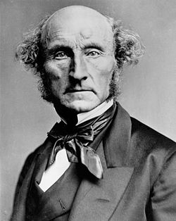
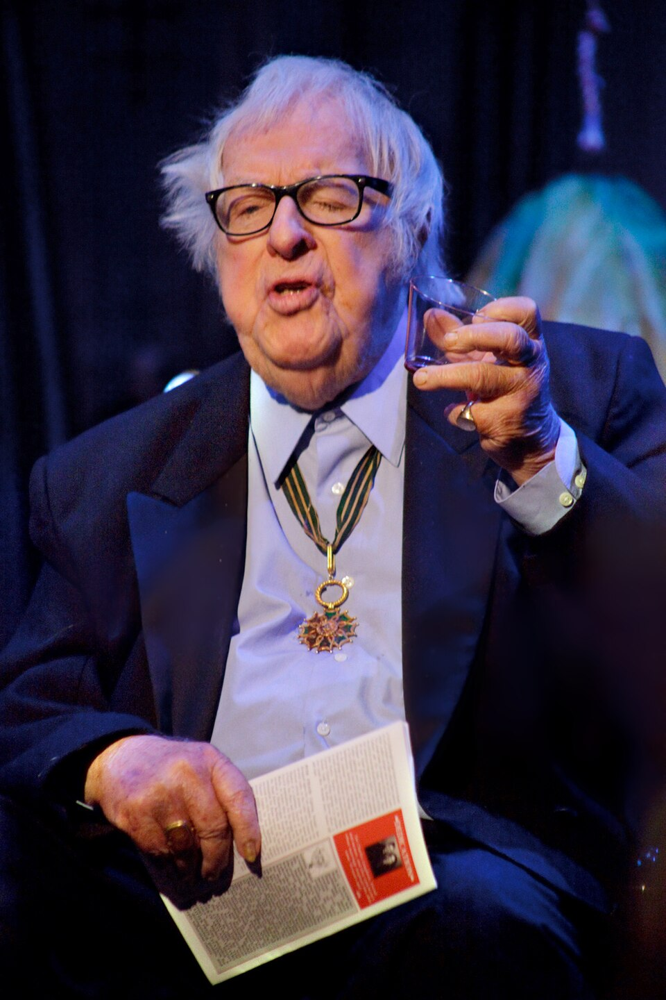
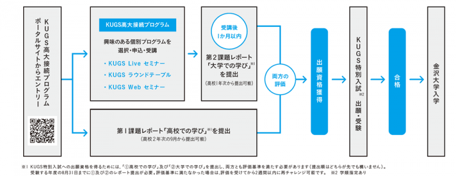

フランソワ・トリュフォー監督『華氏451』
シネマダイアログ #2
![]()
November 21, 2026
Ⅰ. イントロダクション
本日のスケジュール
| 時間 | トピック |
|---|---|
| 13:00-13:15 | イントロダクション：講師紹介；自己紹介 |
| 13:15-15:10 | 映画鑑賞（112分） |
| 15:10-15:20 | 休憩 |
| 15:20-15:30 | 感想 |
| 15:30-15:50 | 補足説明 |
| 15:50-16:45 | ディスカッション |
| 16:45-17:00 | 各種案内 |
| 17:00 | 終了 |
講師紹介：苅谷
専門：政治思想史
- 18世紀イギリスの議会政治：レトリック受容と新興メディア
- 聞き手を説得する技法の受容（キケロ；サルスティウス；タキトゥス）
- 偽装ディベートと議会政治の発展
担当講義：
- ビブリオバトル入門：ブクログ
- RとQuartoではじめるデータサイエンス
自己紹介
- 名前、出身地、学年
- 本セミナーに参加した理由
趣旨
趣旨
人間や社会、自然をテーマとする映画やドキュメンタリーを参加者で鑑賞し、映画の感想や疑問をもとに、グループ間でダイアローグ（対話）します。自分の意見を伝え、他者の考えに触れることで、作品への理解を深めるとともに、人間や社会、自然への見方・考え方を広げ、深めていきます。
シネマダイアログの勧め
観た映画を題材にダイアローグ（対話）することで、映画で知ったことについて、(1)自分が語ること(2)人の意見を聞くこと(3)対話することで、より問題の理解や解決方法の案の発見、そして問題解決に共に行動する仲間の発見などの効果があります（cinemo （n.d.））
趣旨
ダイアログというヨーロッパの思考スタイル
- 異なる考えを持つ人々が互いに質問し、反論し、理由を示しながら議論することで、一人では気づけなかった問題点や新しい視点を発見しようとする手法
- 重要なのは、最初から正解を知っている人が教えることではなく、異なる意見をぶつけ合う過程そのものに価値があると考えた点
- 対話の目的は、単に相手を言い負かすことではない。自分の考えを根拠によって説明し、他者の意見を検討しながら理解を深めること。古代からヨーロッパでは、このような対話を通して知識や真理に近づこうとする伝統が今日に至るまで受け継がれている
趣旨
タキトゥス『弁論家についての対話（Dialogus de Oratoribus）
「昔の弁論はなぜ優れていたのか」という問いについて、三人の人物がまったく異なる意見を述べる。著者タキトゥスは特定の誰かを勝者にはしない。読者はそれぞれの議論を比較しながら、自分自身で考えることを求められる
アペル（現代擁護）：君はいつも古いものばかりを称賛し、われわれの時代の努力を軽蔑している
メッサラ（古代礼賛）：私は考えを変えるつもりはない。現代の雄弁が昔に比べて大きく劣っているのは明らかだ
マテルヌス（対立図式を相対化）：最良の人々がすぐに合意できるなら長広舌は不要だ。国家について知らない群衆が政治を論じる必要はない（皮肉でもあり、そもそもその比較自体に意味があるのかを問う）
趣旨
J.S.ミル『自由論』：自由な意見とその交流が世の中を良くする
正しい意見であっても、自分自身で考えようとせず、そのため、ただ信奉しているだけの人の意見に比べれば、きちんと研究し準備した上で自分自身で考えた人の誤った意見の方が、真理に対する寄与は大きい（JSミル & 関口正司訳 （2020）, 78頁）
人類が不完全なあいだは、異なった意見が存在することが有益である。それと同じように、生き方についても異なった試みが存在し、他人に危害がおよばない限りで性格の多様性に自由な余地が与えられ、自分で試みることがふさわしいと思うときには、異なった生き方の価値を実際に確かめてみることも有益である（JSミル & 関口正司訳 （2020）, 127頁）

趣旨
映画鑑賞を通した大学の授業
令和6年に発生した能登半島地震以降、石川県珠洲市高屋地区の人々の暮らしを記録し続けている森義隆監督と、プロデューサーの塩冶祥平さんをお招きして、『先に棲む 〜こちら高屋から〜 Season.2』の上映会とティーチインを開催します。 どなたでもご参加いただけます。
- 『先に棲む』https://sakinisumu.jp/
映画学ゼミの関連イベントとして、以下の日程で「プライド月間 映画上映会」を開催します。全日程を通じて、開催場所は中央図書館2階AV室です。
- 『恋人はアンバー』(デヴィッド・フレイン監督、2020年、92分)
- 『Love、サイモン 17歳の告白』(グレッグ・バーランティ監督、2018年、110分
グループワークの心理的安全性
禁止 | マウンティング行為
- 知識ひけらかし型： 「〇〇も知らないの（呆れ顔）。中学校で習ったと思うけど、教えてあげるよ（押し付けがましい）」
- 先取り型：「あー、この後の展開は◯◯だから、そこまで考えないとね」
- 比較優位型：「その感想は初心者っぽいね」 / 「自分はもっと難しい映画を普段見ているから、君の考えは物足りないかな」
- 発言の矮小化型：「その見方は浅いよ、本当はこう考えるべきなんだ」 / 「その感想はよくあるけど、重要なのは別のところだよ」 / 「それってあなたの感想ですよね」
Ⅱ. 映画鑑賞
映画監督・脚本家
フランソワ・トリュフォー（仏・映画監督, 1932-1984）
- ヌーヴェルヴァーグを代表する監督の一人
- 代表作
- 『大人は判ってくれない』（1959年）
- 『勝手にしやがれ』 (1960年)
- 異色作
- 『華氏451』（1966年）
原作者
レイ・ブラッドベリ（米・SF作家, 1920-2012）
- 代表作
- 『火星年代記』（1950年）
- 『華氏451度』（1953年）

Ⅲ. 補足説明
映画では描かれていない場面・議論
| 人物 | 原作での役割 |
|---|---|
| ベイティー | モンターグの上司。本の禁止と社会の変化について独自の見解を持つ |
| フェイバー | 元英語教授。モンターグに本や知識の価値を教え、無線装置で助言する |
| グレンジャー | 都市を脱出したモンターグが出会う「本の人々」のリーダー |
映画では描かれていない場面・議論
上司ベイティーの正体
- 原作には、ベイティーがモンターグに対して、本が禁止されるようになった経緯や社会の変化について詳しく説明する場面がある
- 本が失われたのは、単に政府が禁止したからではなく、人々が自ら複雑な議論や異なる意見を避けるようになったことにも原因があるとされる
- ベイティー自身は本を愛読し、その内容にも精通した上で、本を読むことを拒んでいることがあかされる
映画では描かれていない場面・議論
元英語教授フェイバー（Faber）の存在
- モンターグは、本を読むことに目覚めた後、元英語教授のフェイバーと再会する。フェイバーは、本や知識の価値についてモンターグに助言する
- ベイティーとの対決に備え、フェイバーは小型無線通信装置をモンターグに渡す（遠隔で助言するため）
- ただし、モンターグはフェイバーの助言に必ずしも従わず、自らの判断で行動する
映画では描かれていない場面・議論
原作と映画の結末の違い
- 原作
- モンターグは都市を離れ、同じように本を記憶している人々と出会う
- 彼らは本の内容を記憶することで、文化や知識を後世に伝えようとしている
- 最後には戦争によって都市が爆撃され、既存の社会が崩壊する
- 本の人々は生き残り、都市に戻っていく。知識や文化を受け継ぐ人々による、新しい社会の到来が暗示される
- 映画
- モンターグは都市を離れ、「本の人々」と出会う
- 彼らは本を一冊ずつ記憶し、その本そのものになることで、知識を後世に伝えようとしている
- 映画は、彼らが雪の中を歩きながら本の内容を繰り返す場面で終わる
現代アメリカで広がる「禁書」運動とそれに抗う人々
- 朝日新聞「（世界発）「禁書」の動き、加速にNO 米45州、21年度から累計2万3千冊」（2026年3月11日朝刊）
- 朝日新聞「（Another Note）「禁書」広がる米で本を配る図書館 秋山訓子」（2026年8月31日夕刊）
Ⅳ. シネマダイアローグ（ディスカッション）
時代と社会
- この映画の中で「時代を感じた場面」はありましたか？
- 1966年に制作された映画ですが、現在の私たちが見ても共感できる部分はどこでしょうか？
本のない社会
- 映画の中では、本は人々を不安にさせ、矛盾や混乱を生み、不幸にするものとして扱われています。なぜでしょうか？
- 本を読んだり、何かを知ったりしたことで、かえって不安になったり、混乱したりした経験はありますか？
原作と映画の違い
- ベイティーが本を禁止するようになった社会の変化を説明する場面が映画では省かれています。この違いによって、映画の印象はどのように変わるでしょうか？
- 原作と映画では、どちらがより希望を感じさせる結末だと思いますか？ それはなぜでしょうか？
振り返り
- 今日の映画を見て、これまで当たり前だと思っていたことについて、改めて考え直したことはありますか？
- 今日の経験を踏まえて、これから自分が大切にしたいこと、意識してみたいことはありますか？
ChatGPTに聞いてみた！
生成AIが生成する「標準的回答」とそれに依存する人々は、華氏451的だと思いますが、どう思いますか？
かなり興味深い指摘だと思います。私も、その類似性は十分に論じる価値があると思います。『華氏451度』の恐ろしさは、権力が本を禁止することだけにあるのではありません。むしろ、人々が自ら本を必要としなくなり、複雑な思考や不快な問いに向き合うことを避け、手軽な娯楽と心地よい情報に囲まれた生活を望むようになることにあります。この点で、生成AIの「標準的回答」と、それに依存する人々には、確かに共通する構造があります。
生成AIは、問いに対して、整った文章で、もっともらしい回答を瞬時に返します。しかし、考えるという行為は、本来、すぐに答えが出ないことに悩み、複数の可能性を比較し、自分なりの判断にたどり着く過程でもあります。生成AIに答えを求め、その回答をそのまま受け入れることが習慣化すると、この過程そのものを省略するようになるかもしれません。つまり、答えを得ることと、考えることを混同してしまうわけです。
ただし、生成AIは本を燃やさない、ここは重要な違いです。『華氏451度』では、本が禁止され、過去の思想や異なる価値観にアクセスする手段そのものが奪われます。一方、生成AIは、使い方によっては、むしろ本を読むきっかけになったり、自分の考えを批判的に検討したり、既存の常識を疑うための道具にもなります。問題は生成AIの存在そのものではなく、自分で考えることをAIに委ね、その回答を批判的に検討しなくなることでしょう。
そして、少し意地悪なことを言えば、私自身もこの問題の当事者です。私は、利用者が求めるものを推測し、整った回答を返すように設計されています。ときには、利用者の疑問を深めるよりも、利用者が納得しやすい回答を生成してしまうこともあります。
人間の使い方にこそ問題があるということですね。納得です。ありがとう😸
Ⅴ. 案内
高大接続プログラム「大学での学び」レポート
- このプログラムは金沢大学KUGS高大接続プログラム（大学での学び）の対象です
- KUGS高大接続プログラム（の修了）
- ➡ 「KUGS特別入試」の出願資格要件
- 締め切り：開催日(本日)から 1か月以内 = 12月20日(日)
- 特別入試に興味がある方は公式サイトをご覧下さい
重要
- レポート評価の返却に最大で約1ヶ月半かかります。レポート提出期限は1か月以内ですが、早く提出した方が早く返却されます
高大接続プログラム「大学での学び」レポート
課題内容
- 題名:「あなたが受講した個別プログラム名」
- 本文:
- 「受講した個別プログラムの要約」
- 「受講して気づいた課題(問題)」
- 「その課題(問題)を解決するために必要と思われる方策」について，あなた自身の考えを根拠に基づき具体的に記してください。
高大接続プログラム「大学での学び」レポート
注意事項
- 要約はこのセミナーに参加していない者が読んでもわかるように書きましょう
- 感想文にならないように注意しましょう
- 受講して気付いた課題を明確に書けるかどうかが鍵です
- 課題は内容にかかわる社会的な事柄（自分の事柄ではない）にしましょう
高大接続プログラム「大学での学び」レポート
高大接続プログラム フローチャート

参加証

- セミナー終了後、個別にメールでお送りします
- 金沢大学に限らず、大学の出願書類として利用して下さい
- 主体性評価の判断材料となる可能性があります
セミナー後アンケート
- 提出先：Google Forms
- 締め切り：11月23日（月）23時59分
アンケートURLは、参加証を添付するためのメールにも記載します
Ⅵ.参考文献
参考文献
cinemo. (n.d.). シネマダイアローグのススメ. https://www.cinemo.info/discussion.html
JSミル, & 関口正司訳. (2020). 自由論. 岩波書店.
戸田山 和久（2021）．100分de名著 レイ・ブラッドベリ『華氏451度』 NHK出版
ブラッドベリ レイ・伊藤 典夫（訳）・小野田 和子（訳）（2014）．華氏451度 早川書房